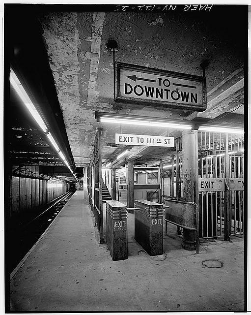
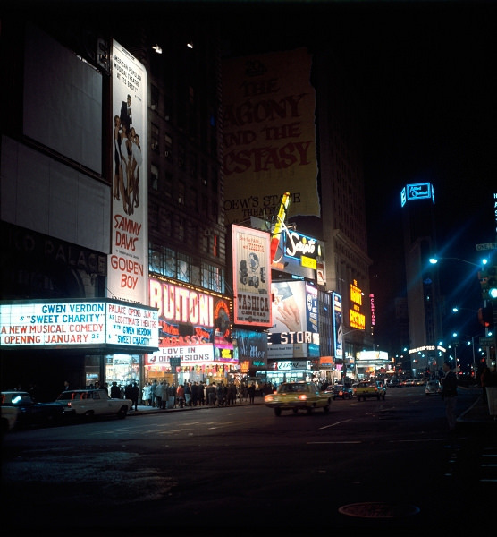

Todd Webb 6th Ave Between 43rd and 44th Streets, New York City 1948
Todd Webb 6th Ave Between 43rd and 44th Streets, New York City 1948

Obsolete subway cars await their fate at the Coney Island Yard, Avenues X & Y at West 11th Street, September 29, 1962 (George Conrad collection)

Photo: Library of Congress http://www.loc.gov/pictures/item/ny0387.photos.120135p/resource/

A Great Day in Harlem, 1958.

Famous Ray’s, 6th Ave and 11th St, 1978
Throwback Thursday: The corner of 62nd Street and Columbus Avenue circa 1960, when the New York State Theater (now the David H. Koch Theater), New York City Ballet’s new home, was about to be built. You can also spot Philharmonic Hall (now Avery Fisher Hall) going up in the background. (Courtesy: Lincoln Center Archives)

New York, October 1972

Women in bathing suits on the boardwalk with percussion band behind.
Coney Island, 1984
William Gedney Photographs and Writings
Duke University David M. Rubenstein Rare Book & Manuscript Library
79th and Amsterdam, looking West, 1978

Before there were instructional videos on how to ride on a train. 1966.

Preaching to no one outside of Macy’s, 1979
Thanks!

Broadway by night, 1970 © Keystone Agency